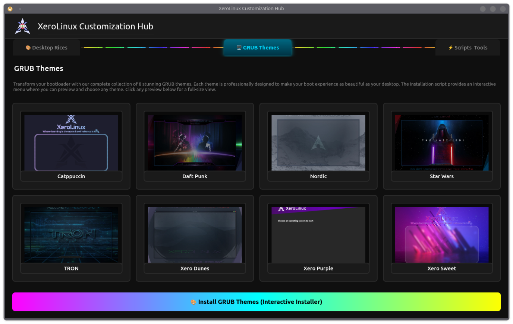
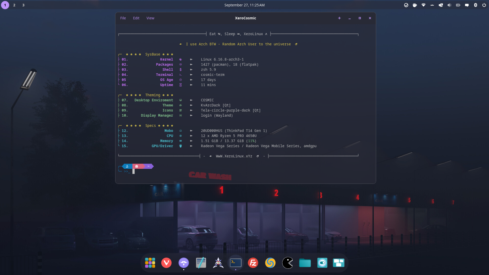
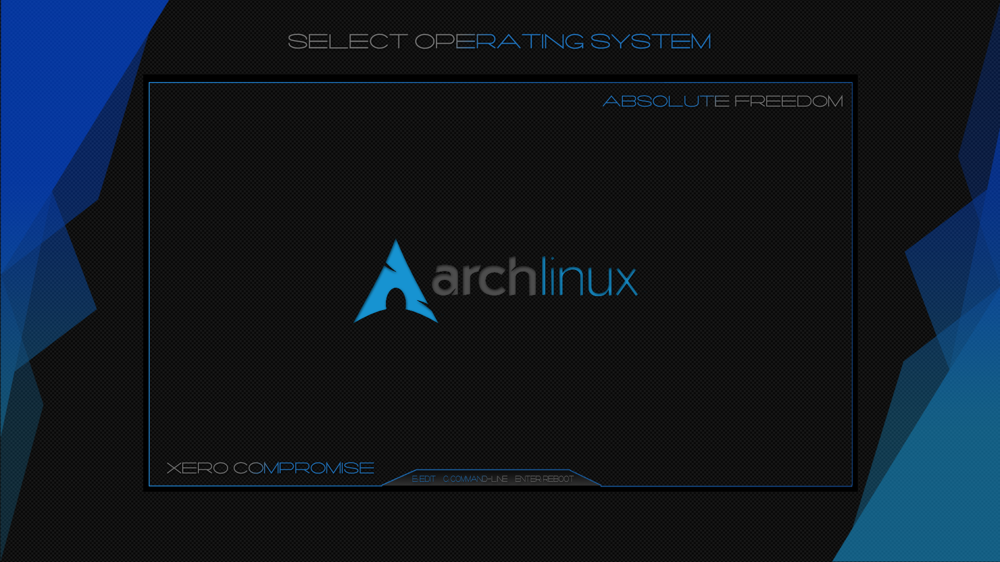

🎨 XeroLinux Customization Hub 🎨
Overview¶
The XeroLinux Customization Hub is a vibrant, all-in-one GUI tool I created as a fun side project, that consolidates all the XeroLinux themes, scripts, and system tools. Built with PyQt6, it features animated RGB borders, a dark-themed interface with cyan/teal accents, and embedded screenshots to give you a visual preview of each customization option.

Features¶
This tool was created for any Arch System. It includes :
- Desktop Rices: Install beautiful desktop Rices.
- GRUB Themes: Inst aany of 8 stunning
Grubthemes. - Scripts & Tools: Quick access to essential utilities & Scripts.
.// Documentation \\.
Tool Usage¶
Single Command¶
- Dependencies :
Before running the tool, ensure you have the required dependencies installed:
- Execution :
Execute the tool directly from the web with a single command:
Alternatively, you can download it first and run it locally:
Manual Methods¶
Below is how you can use each feature separately and manually...
Requirements :
- XeroLayan :

Elements Used :
The rice uses the Layan KDE Theme & Tela Circle Icons by VinceLiuice. As for Widgets, it uses Apdatifier, Netspeed, Quick Shutdown, Wunderground PWS, and Kurve Audio Visualizer, as for KWin Scripts we have, Karousel, MouseTiler, and Krohnkite, finally for tweaks we have Panel Colorizer, and Smart Video Wallpaper
- Xero Cosmic:

- Xero Grubs :

- Plymouth Manager :

wget https://raw.githubusercontent.com/XeroLinuxDev/extra-scripts/refs/heads/main/usr/local/bin/xpm
chmod + xpm && sh xpm
- Unofficial Chaotic-AUR Tool :

Issues & Fixes¶
- Plymouth Boot Delay
In many cases, on a very fast system with an nVme SSD boot animation can go by way too quickly. To solve that please do the following to add a short delay to boot sequence :
Add the following to that file :

Adjust delay to fit your setup. Save it and apply with sudo systemctl daemon-reload.
- Plymouth Multi-Monitor
In a multi-monitor setup, Plymouth might not show the animation scaled correctly. To fix that, do the following :
Then use a tool like xrandr to identify your primary monitor, and add it to grub's GRUB_CMDLINE_LINUX_DEFAULT=' line, like so video=DP-1:1920x1080@60, replacing the DP-1 with yours. Save and exit, then update grub with the following command :
Final Words¶
The XeroLinux Customization Hub brings together all your favorite XeroLinux customization options into one sleek, easy-to-use interface. Whether you're looking to rice your desktop, beautify your bootloader, or manage system tools, this hub has you covered. The animated interface and embedded previews make it not just functional, but visually appealing as well. Give it a try and transform your Arch Linux experience!